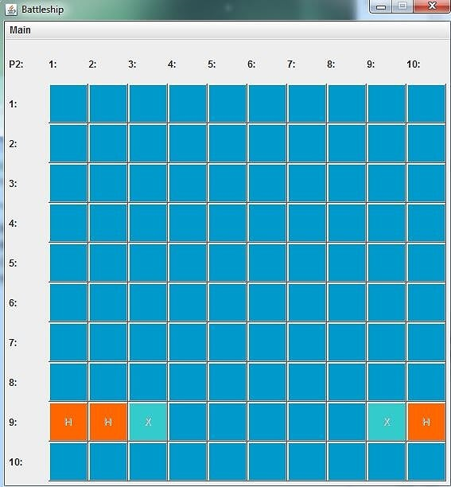

My name is Bart Kooijmans
I am a passionate software developer and programmer with an interest in solving complex pieces.
I'm continuously looking to develop myself further and with the use of this portfolio would like to share my trip so far.
Below a showcase of my some of my projects.

This is my final thesis project for my degree, it is still a work in progress.
The idea behind this project was just to create a program in Java that manages UML models but to do it using a conciousness design.

This was my first hobby project. It is a simple recreation of the game battleship, where you can play versus the computer or another person.
The goal of this project was to familiarise myself with basic GUI in Java and connecting functionality to effectively.